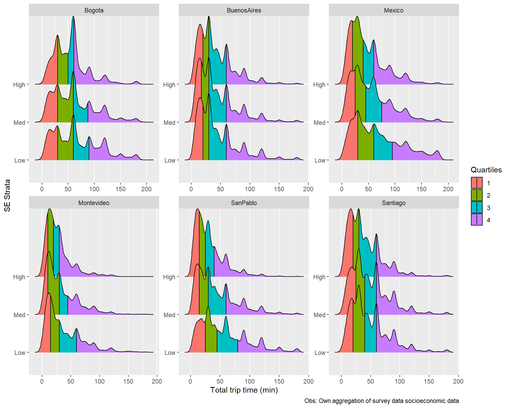
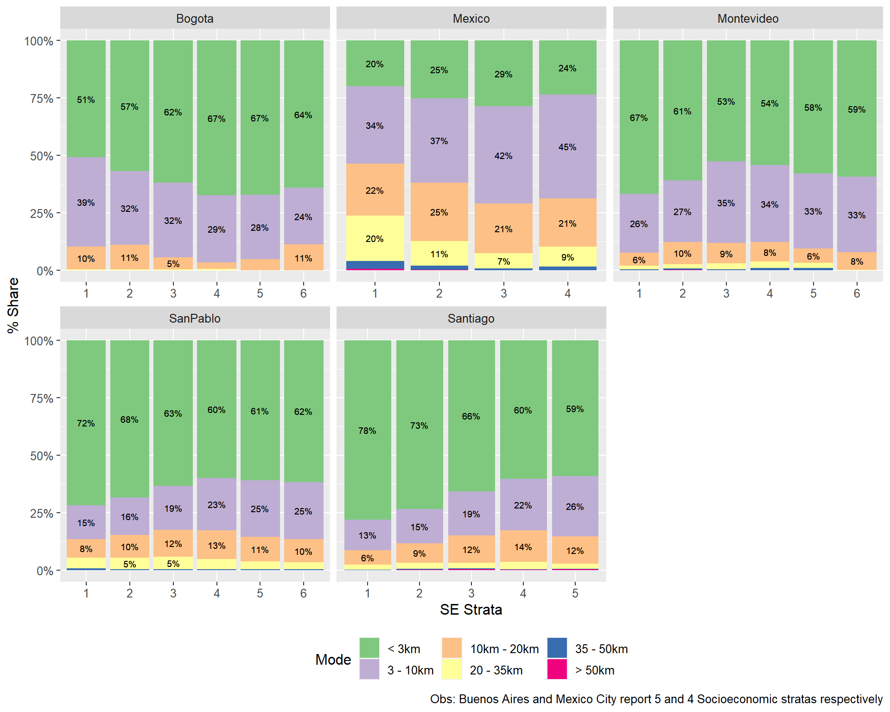
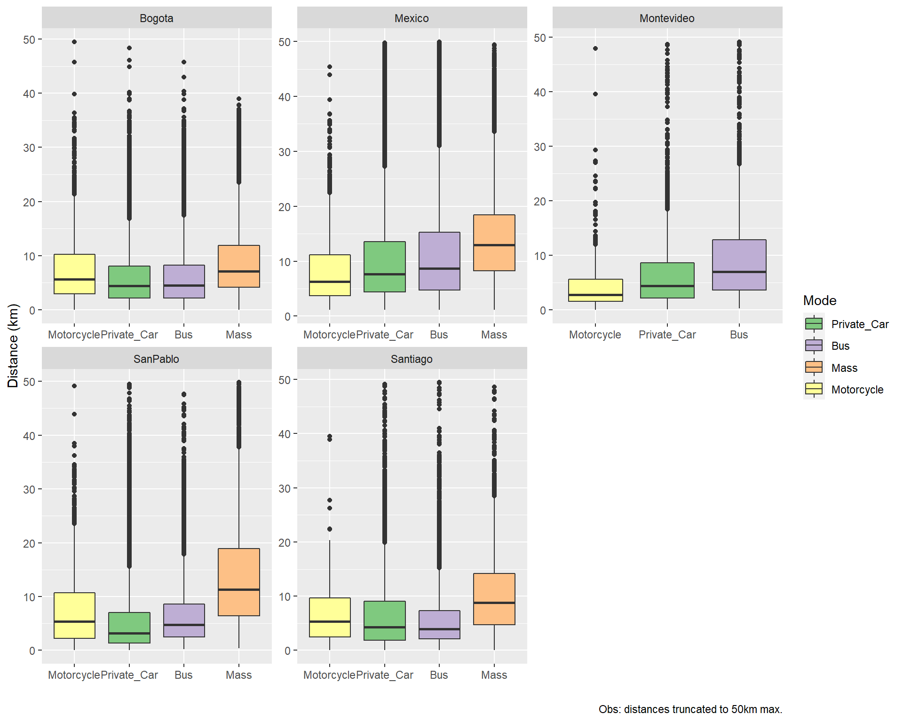

Socioeconomic Analysis
Abstract
This section looks at the distribution of different survey parameters characterizing daily commuting trips for 6 LAC cities. The main characteristics analyzed are Socioeconomic strata (SES) of the individual performing the trip, mode used for the trip, gender of the individual, and age of the individual.
1 Socio-economic strata
1.1 Modes
There is a clear and well documented difference in mode use by strata. Lower income groups walk and use more transit, and higher incomes rely on private vehicles.
1.2 Trip Duration
Although there is not a clear cut common trend for all cities, Bogota, Mexico, Montevideo and Sao Paulo exhibit more larger trip durations (60 minutes or more) in lower income sectors. Conversely, Buenos aires, Montevideo and Santiago also show more participation of lower income groups in the shortest trips, below 15 minutes.
1.2.1 Trip Duration: Quartiles

This aggregated version of socioeconomic strata shows the different trends by city, but with pockets of specific durations in some stratas.
1.3 Distance
Distance information is missing for Buenos Aires.

Partially explaining the distribution for trip durations, and showing most of the trips are below 20km in distance; except for the case of Mexico, where longer trips are a significant portion, specially for lower income groups.
Montevideo, SaoPaulo, Santiago show shorter trip duration for lower ses groups. Bogota shows a reversed trend, and mexico shows a high peak of longer distances in the lower groups. Santiago and Sao Paulo show higher degrees of noise in the tails of lower income groups, but not in higher ones.
1.4 Commercial commuting speed
Combining the trip duration and distance data, we obtain an average or “commercial” speed of the commute. Again, distance data is not present for Buenos Aires.
Similarly to before, Montevideo, Santiago, and Sao Paulo show higher incomes travelling faster (observe the diffusion of the peak for higher income groups). Bogota shows an opposite trend, with similar distributions for all sectors. Mexico exhibits the most distinct variation across groups.
1.5 Motives
Although not all surveys offer the same possible answers to the trip motive, these were aggregated to the 9 major categories outlined below.

Trends can be seen for studying and working, not equal across all cities. The match between Santiago, Sao Paulo and Montevideo here may be explaining the similarities observed before. Transporting someone, recreation, errands and shopping have varying degrees of relevance by city.
1.6 Trips from outside / towards outside of the metropolitan area limits
Using the post processing within the IDB that tried to identified patterns for trips that were outside the limits of the metropolitan area. These were distinguished as originating outside, or bound for outside of the city limits. Sao Paulo and Buenos Aires were excluded from this analysis due to the lack of geographical coordinates in the survey responses.
Trips originated and bound for within the metropolitan area were labelled endogenous and filtered out. Trips originated outside and inbound are labelled incoming, thost originated within and with outer destination are labelled outbound, and those originated outside and bound outside of the metropolitan area are labelled external. Endogenous trips are clearly the higher percentage of trips.
Probably the city size is influencing the values presented, and should be considered along with each city morphology.
2 Mode
Below we analyze the different trip characteristics by mode used for the trip.
2.1 Travel time by mode
The travel time pattern by mode is clear across the region. This could be due to higher speed of the mode, or due to shorter distances being performed.
2.2 Travel distance by mode

Here we can conclude the time difference is owed to shorter distances being performed in private modes. Observe there is a higher spread here.
2.3 Speed by Mode
Reinforcing the previous diagrams, bus and mass transit perform longer trips, that take more time due to lower commercial speeds.
2.4 Motives
1: The role of motorized modes in working trips. 2: Taxi, walking, and private cars have more diverse roles
3 Gender
This section observes trends by gender of the individual performing the trip.
3.1 Mode
Perhaps the most outstanding pattern is the relation between male oriented private car and female dominated bus in all cities. Taxi and mass transit are also slightly female oriented, and motorcycle clearly male oriented.
3.2 Trip duration

Women favor shorter trips, but except for the case of Mexico, the differences do not look substantial. Trip time groups seem to be given by city characterstics and not individual gender patterns.
3.3 Distance
3.4 Commercial Speed
Men travel slightly faster.
3.5 Motives
Working is male dominated, and replaced, depending on the city, with activities like groceries, transporting someone, or errands.
4 Age
Below are explored patterns by age group.